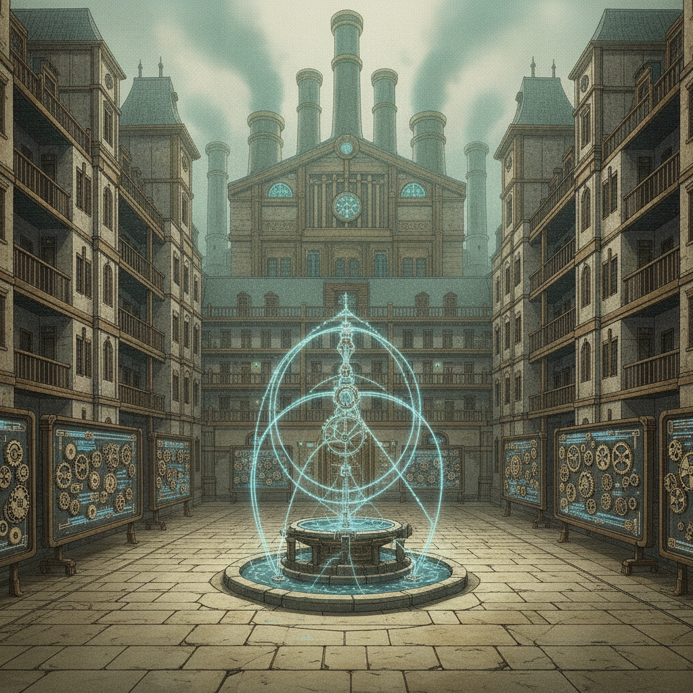
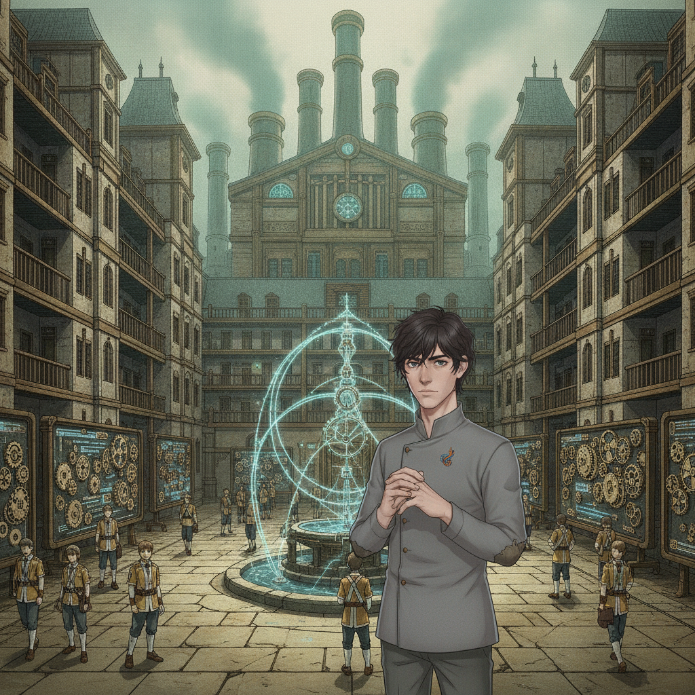

The Great Courtyard, mid-morning. The metered fountain folds water into impossible arcs while students in Regulen livery cross between the lecture wings.
In the practice yards, Ember Kellan pours raw current into a target until the cautious around her step back; the rust on her forearm darkens with the effort.
Isolde Vorn keeps to the colonnade, unmoving, one hand at her key-pendant — ungoverned talent held at arm's length.
Seraphine Halcyon stands at the centre of a knot of envoys without seeming to have sought it. Wren Ashfield watches from the margin, and slips away before anyone thinks to ask her name.

Caedon Vale“Four directions to look. Somehow I keep looking in all of them.”